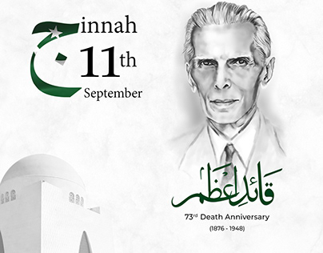
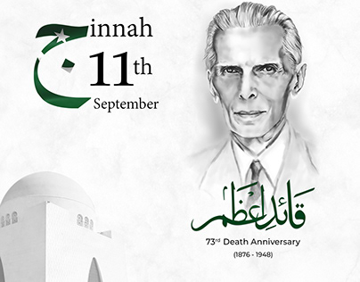

Jinnah's father Jinnahbhai Poonja (born 1850) was the youngest of three sons. He married a girl Mithibai with the consent of his parents and moved to the growing port of Karachi. There, the young couple rented an apartment on the second floor of a three-storey house, Wazir Mansion. The Wazir Mansion has since been rebuilt and made into a national monument and museum owing to the fact that the founder of the nation, and one of the greatest leaders of all times was born within its walls. On December 25, 1876, Mithibai gave birth to a son, the first of seven children. The fragile infant who appeared so weak that it weighed a few pounds less than normal. But Mithibai was unusually fond of her little boy, insisting he would grow up to be an achiever. Officially named Mahomedali Jinnahbhai, his father enrolled him in school when he was six—the Sindh Madrasatul-Islam; Jinnah was indifferent to his studies and loathed arithmetic, preferring to play outdoors with his friends. His father was especially keen towards his studying arithmetic as it was vital in his business. By the early 1880s' Jinnahbhai Poonja's trade business had prospered greatly. He handled all sorts of goods: cotton, wool, hides, oil-seeds, and grain for export and Manchester manufactured piece of goods, metals, refined sugar imports into the busy port. Business was good and profits were soaring high.1 In 1887, Jinnahbhai's only sister Man Bai came to visit from Bombay. Jinnah was very fond of his Aunt and vice versa. She offered to take her nephew with her in order to give him a chance of better education at the metropolitan city, Bombay, that was much to his mother's dismay who could not bear the thought of being separated from her undisputedly favorite child. Jinnah joined Gokal Das Tej Primary School in Bombay.2 His spirited brain rebelled inside the typical Indian primary school which relied mostly on the method of learning by rote. He remained in Bombay for only six months, returned to Karachi upon his mother's insistence and joined the Sind Madrassa. But his name was struck off as he frequently cut classes in order to ride his father's horses. He was fascinated by the horses and lured towards them. He also enjoyed reading poetry at his own leisure. As a child Jinnah was never intimidated by the authority and was not easy to control. He then joined the Christian Mission High School where his parents thought his restless mind could be focused. Karachi proved more prosperous for young Jinnah than Bombay had been. His father's business had prospered so much by this time that he had his own stables and carriages. Jinnahbhai Poonja's firm was closely associated with the leading British managing agency in Karachi, Douglas Graham and Company. Sir Frederick Leigh Croft, the general manager of the company, had a great influence over young Jinnah, which possibly lasted his entire life. Jinnah looked up to the handsome, well dressed and a successful man. Sir Frederick liked Mamad (Jinnah’s childhood name), recognizing his extreme potential, he offered him an apprenticeship at his office in London.3 That kind of opportunity was the dream of all young boys of India, but the privilege went to only one in a million. Sir Frederick had truly picked one in a million when he chose Jinnah.